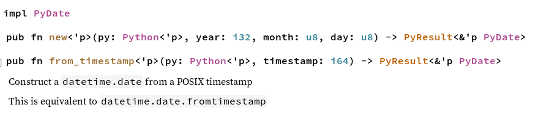
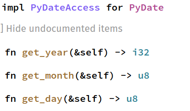
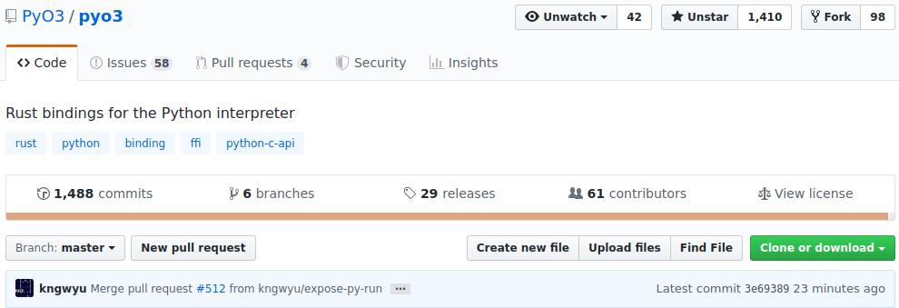

<!doctype html>
<html lang="en">

	<head>
		<meta charset="utf-8">

		<title>Build your Python Extensions with Rust!</title>

		
		
		<meta name="apple-mobile-web-app-capable" content="yes" />
		<meta name="apple-mobile-web-app-status-bar-style" content="black-translucent" />

		<meta name="viewport" content="width=device-width, initial-scale=1.0, maximum-scale=1.0, user-scalable=no">

		<link rel="stylesheet" href="reveal.js/css/reveal.css">
		<link rel="stylesheet" href="reveal.js/css/theme/white.css" id="theme">

	
		<link rel="stylesheet" href="css/custom.css">
	


		<!-- For syntax highlighting -->
		
		<link rel="stylesheet" href="css/xcode-pg.css">

		<!-- If the query includes 'print-pdf', use the PDF print sheet -->
		<script>
			document.write( '<link rel="stylesheet" href="reveal.js/css/print/' + ( window.location.search.match( /print-pdf/gi ) ? 'pdf' : 'paper' ) + '.css" type="text/css" media="print">' );
		</script>

		<!--[if lt IE 9]>
		<script src="reveal.js/lib/js/html5shiv.js"></script>
		<![endif]-->
	</head>

	<body>

		<div class="reveal">

			<div class="slides">

				
				<section data-markdown data-separator="^\n---\n$" data-separator-vertical="^\n--\n$" data-notes="^Note:">
					<script type="text/template">
<h1 style="font-size: 3em">Build your Python Extensions with Rust!</h1>
<br/>
<br/>
<br/>
<span style="font-size: 2.5em">
Paul Ganssle
</span>
<br/>
<br/>

<br/>
<br/>
<!--
<a rel="license" href="http://creativecommons.org/licenses/by/4.0/">
    
</a>
-->
<br/>

Notes:

					</script>
				</section>
				
				<section data-markdown data-separator="^\n---\n$" data-separator-vertical="^\n--\n$" data-notes="^Note:">
					<script type="text/template">
# Python as Glue


Notes:

Python is an excellent "glue" language - it's super easy to write APIs and work with,
but it's got a lot of overhead.

Glue Libraries
- Numpy
- OpenCV
- TensorFlow / PyTorch
- Pillow (imaging)

					</script>
				</section>
				
				<section data-markdown data-separator="^\n---\n$" data-separator-vertical="^\n--\n$" data-notes="^Note:">
					<script type="text/template">
# Sieve of Eratosthenes: Python Version

```python
import math

def sieve(n):
    numbers = list(range(2, n + 1))

    for i in range(2, int(math.sqrt(n))):
        if numbers[i - 2] != 0:
            for j in range(i * i, n + 1, i):
                numbers[j - 2] = 0

    return [x for x in numbers if x != 0]
```
<br/>
<br/>

## Output:

```
>>> sieve(5)
[2, 3, 5]

>>> sieve(20)
[2, 3, 5, 7, 11, 13, 17, 19]
 ```

Notes:

Here is a simple program for calculating all the prime numbers less than a given
number, using the Sieve of Eratosthenes algorithm, which works by starting
with an array of all possible numbers and then crossing out all multiples of
the primes you find.

--

# C API

```C
static PyObject* sieve_impl(PyObject* self, PyObject* max_n) {
    size_t n;
    if ((n = PyLong_AsSize_t(max_n)) == (size_t)-1 && PyErr_Occurred()) { return NULL; }

    // Populate the C array
    int* sieve = malloc((n - 1) * sizeof(int));
    if (sieve == NULL) {
        PyErr_NoMemory(); // raise MemoryError()
        return NULL;
    }

    for (size_t i = 2; i < n + 1; ++i) { sieve[i - 2] = (int)i; }

    // Sieve out composite numbers
    size_t lim = (size_t)sqrt((double)n);
    for (size_t i = 2; i < lim; ++i) {
        if (sieve[i - 2] != 0) {
            for (size_t j = (i * i); j < (n + 1); j += i) {
                sieve[j - 2] = 0;
            }
        }
    }

    // Convert to Python list
    size_t num_primes = 0;  // Calculate total size of list
    for (size_t i = 0; i < n - 1; ++i) { if (sieve[i]) { num_primes++; } }

    PyObject* rv = PyList_New(num_primes);
    if (rv == NULL) { goto cleanup; }
    PyObject * obj = NULL;
    size_t j = 0;
    for (size_t i = 0; i < n - 1; ++i) {
        if (!sieve[i]) { continue; }
        if ((obj = PyLong_FromLong(sieve[i])) == NULL || // int -> Py int
                   PyList_SetItem(rv, j++, obj)) {       // rv[i] = obj
            Py_DECREF(rv);  rv = NULL;                   // On error, remove list
            goto cleanup;
        }
    }
cleanup:
    free(sieve);
    return rv;
}
```

Notes:

Here's the same program, written with the C API, obviously it's a lot more complicated,
and if you look closely, you'll notice that I've had to use a terse programming style
just to fit it all on one slide.

But the number of lines of code is not as important as the fact that there are a lot
of details in here that are hard to keep track of - memory, reference counts, error handling.

So why do this, rather than just write the nice, simple Python program?

--

# C API: Performance benefits

```
In [1]: from cmod import ext
In [2]: import pymod
In [3]: %timeit ext.sieve(100000)
526 µs ± 5.08 µs per loop (mean ± std. dev. of 7 runs, 10000 loops each)

In [4]: %timeit pymod.sieve(100000)
18.6 ms ± 454 µs per loop (mean ± std. dev. of 7 runs, 100 loops each)

In [5]: 18.6 / 0.526
Out[5]: 35.361216730038024
```

<br/>
<br/>
<table>
    <tr>
        <td>N</td>
        <td>Pure Python</td>
        <td>C Extension</td>
        <td>Ratio</td>
    </tr>
    <tr>
        <td>1</td>
        <td>832 ns</td>
        <td>51 ns</td>
        <td>16</td>
    </tr>
    <tr>
        <td>100</td>
        <td>9.0 μs</td>
        <td>353 ns</td>
        <td>25</td>
    </tr>
    <tr>
        <td>1000</td>
        <td>116.3 μs</td>
        <td>4.2 μs</td>
        <td>28</td>
    </tr>
    <tr>
        <td>100000</td>
        <td>16.6 ms</td>
        <td>498 μs</td>
        <td>33</td>
    </tr>
    <tr>
        <td>1000000</td>
        <td>240 ms</td>
        <td>5.4 ms</td>
        <td>44</td>
    </tr>
</table>


--

# C API: Downsides

- Manual memory management
- Manual reference counting (`Py_INCREF`, `Py_DECREF`)
- No memory safety

```C
    for (size_t i = 0; i < n; ++i) {   // Sieve's length is n - 1!
        if (!sieve[i]) { continue; }
        if ((obj = PyLong_FromLong(sieve[i])) == NULL || // int -> Py int
                   PyList_SetItem(rv, j++, obj)) {       // rv[i] = obj
            Py_DECREF(rv);  rv = NULL;                   // On error, remove list
            goto cleanup;
        }
    }
```
<!-- .element class="fragment" -->

Notes:

Oops, that `i < n` should actually be `i < n - 1`!

					</script>
				</section>
				
				<section data-markdown data-separator="^\n---\n$" data-separator-vertical="^\n--\n$" data-notes="^Note:">
					<script type="text/template">


- Memory safety
- Fearless concurrency
- High performance
- Broad community and open source ecosystem


Notes:

This is where Rust comes in, because Rust is a modern systems programming
language that attempts to build solutions to these and other problems deep
into the structure of the language. It is a memory safe language that seeks
to enable fearless concurrency without sacrificing performance. And one thing
that I think is particularly appealing to those of us from the Python community
is that it has a high-quality package manager and a huge ecosystem of open
source packages.

--

# Rust: Ownership

- Variable bindings have ownership over the resource they're bound to:
<br/>

```rust
fn some_func() {
    let v = vec![1, 2, 3];
} // v goes out of scope here
```
<br/>

- Assignment of resources *moves* the ownership to the new variable

```rust
fn take_ownership(v : Vec<i32>) {
    // Do stuff with v
} // Resources associated with v can be cleaned up


fn main() {
    let v = vec![1, 2, 3];  // Vector is owned by "v"

    take_ownership(v);      // Vector moves into take_ownership

    println!("{}", v[0]);   // Error: use of moved value `v`
}
```

<br/>
<br/>

```
error[E0382]: borrow of moved value: `v`
  --> src/main.rs:11:20
   |
7  |     let v = vec![1, 2, 3];  // Vector is owned by "v"
   |         - move occurs because `v` has type `std::vec::Vec<i32>`, which does not implement the `Copy` trait
8  |
9  |     take_ownership(v);      // Vector moves into take_ownership
   |                    - value moved here
10 |
11 |     println!("{}", v[0]);   // Error: use of moved value `v`
   |                    ^ value borrowed here after move
```
<!-- .element: class="fragment" -->

					</script>
				</section>
				
				<section data-markdown data-separator="^\n---\n$" data-separator-vertical="^\n--\n$" data-notes="^Note:">
					<script type="text/template">
# Rust API Bindings: PyO3

```rust
fn sieve_impl(n: usize) -> Vec<u32> {
    let mut sieve: Vec<u32> = (2..((n + 1) as u32)).collect();
    let lim : usize = ((n as f64).sqrt() + 1.0) as usize;

    for i in 2usize..lim {
        if sieve[i - 2] != 0 {
            let mut j = i * i;
            while j < n + 1 {
                sieve[j - 2] = 0;
                j += i;
            }
        }
    }

    sieve.into_iter().filter(|&x| x != 0).collect()
}

#[pyfunction]
fn sieve(py: Python, n: u32) -> &PyList {
    let list = PyList::new(py, &sieve_impl(n as usize));

    list
}
```

--

# Rust API Bindings: PyO3

<br/><br/>
```python
>>> from pomodule.backend import sieve
>>> sieve(5)
[2, 3, 5]

>>> sieve(20)
[2, 3, 5, 7, 11, 13, 17, 19]
```

<br>

```
In [1]: from pomodule import backend as rust
In [2]: from cmod import ext as cext
In [3]: import pymod

In [4]: %timeit pymod.sieve(100000)
23.5 ms ± 540 µs per loop (mean ± std. dev. of 7 runs, 10 loops each)

In [5]: %timeit cext.sieve(100000)
698 µs ± 24.3 µs per loop (mean ± std. dev. of 7 runs, 1000 loops each)

In [6]: %timeit rust.sieve(100000)
687 µs ± 12.6 µs per loop (mean ± std. dev. of 7 runs, 1000 loops each)
```

--

## FFI Layer

<div style="display: flex; justify-content: space-between;">
<div style="width: 50%">
<h3>Rust</h3>
</div>
<div style="width: 50%">
<h3>C</h3>
</div>
</div>

#### Functions
<div style="display: flex; justify-content: space-between;">
<div style="width: 50%">
<pre>
<code class="lang-rust hljs">#[repr(C)]
#[derive(Debug, Copy, Clone)]
pub struct PyDateTime_CAPI {
    ...
    pub Date_FromDate: unsafe extern "C" fn(
        year: c_int, month: c_int, day: c_int, cls: \*mut PyTypeObject,
    ) -> \*mut PyObject
    ...
}</code></pre>
</div>
<div style="width: 50%">
<pre>
<code class="lang-C hljs">

typedef struct {
    ...
    PyObject \*(\*Date_FromDate)(
        int, int, int, PyTypeObject\*
    );
    ...
} PyDateTime_CAPI;</code></pre>
</div>
</div>

<br>

#### Data Structures
<div style="display: flex; justify-content: space-between;">
<div style="width: 50%">
<pre>
<code class="lang-rust hljs">#[repr(C)]
#[derive(Debug, Copy, Clone)]
pub struct PyDateTime_Date {
    pub ob_base: PyObject,
    pub hashcode: Py_hash_t,
    pub hastzinfo: c_char,
    pub data: [c_uchar; _PyDateTime_DATE_DATASIZE],
}</code></pre>
</div>
<div style="width: 50%">
<pre>
<code class="lang-C hljs">
typedef struct
{
    PyObject_HEAD
    Py_hash_t hashcode;
    char hastzinfo;             /\* boolean flag \*/
    unsigned char data[_PyDateTime_DATE_DATASIZE];
} PyDateTime_Date;</code></pre>
</div>
</div>

<br>

#### Macros
<div style="display: flex; justify-content: space-between;">
<div style="width: 50%">
<pre>
<code class="lang-rust hljs">#[repr(C)]
pub unsafe fn PyDate_Check(op: *mut PyObject) -> c_int {
    PyObject_TypeCheck(op, PyDateTimeAPI.DateType) as c_int
}</code></pre>
</div>
<div style="width: 50%">
<pre>
<code class="lang-C hljs">
#define PyDate_Check(op) \
    PyObject_TypeCheck(op, PyDateTimeAPI->DateType)

</code></pre>
</div>
</div>

--

# PyO3: How it works

## Safe Rust Layer
```rust
impl PyDate {
    pub fn new<'p>(py: Python<'p>, year: i32, month: u8, day: u8) -> PyResult<&'p PyDate> {
        unsafe {
            let ptr = (PyDateTimeAPI.Date_FromDate)(
                year,
                c_int::from(month),
                c_int::from(day),
                PyDateTimeAPI.DateType,
            );
            py.from_owned_ptr_or_err(ptr)
        }
    }

    ...
}
```
<br/>

<div style="display: flex; justify-content: space-around;">




</div>

					</script>
				</section>
				
				<section data-markdown data-separator="^\n---\n$" data-separator-vertical="^\n--\n$" data-notes="^Note:">
					<script type="text/template">
# PyO3: Making a Module

```rust
use pyo3::prelude::*;
use pyo3::types{PyDate};
use pyo3::wrap_pyfunction;

use date_impl::to_timestamp;

#[pyfunction]
fn seconds_before<'p>(py: Python<'p>, d: &PyDate, seconds: i64) -> PyResult<&'p PyDate> {
    let timestamp = to_timestamp(&d);

    PyDate::from_timestamp(py, timestamp - seconds)
}

#[pymodule]
fn date_ex(_py: Python, m: &PyModule) -> PyResult<()> {
    m.add_wrapped(wrap_pyfunction!(seconds_before))?;

    Ok(())
}
```

<br/>

```python
>>> from pomodule.date_ex import seconds_before
>>> from datetime import date
>>> seconds_before(date(2019, 2, 20), int(1e6))
datetime.date(2019, 2, 9)
```
<!-- .element: class="fragment" -->

<br/>

```python
>>> seconds_before(date(1, 1, 1), int(1e6))
Traceback (most recent call last):
  File "<stdin>", line 1, in <module>
ValueError: year 0 is out of range
```
<!-- .element: class="fragment" -->

--

# PyO3: Making a class

```rust
use pyo3::prelude::*;

#[pyclass]
struct Point {
    x: i32,
    y: i32,
}


#[pymethods]
impl Point {
    #[new]
    fn __new__(obj: &PyRawObject, x: i32, y: i32) -> PyResult<()> {
        obj.init(|| Point { x: x, y: y })
    }

    fn norm(&self, py: Python<'_>) -> f64 {
        ((self.x as f64).powf(2.) + (self.y as f64).powf(2.)).sqrt()
    }
}
```

<br/>
```rust
#[pymodule]
fn classy(_py: Python, m: &PyModule) -> PyResult<()> {
    m.add_class::<Point>()?;

    Ok(())
}
```
<!-- .element: class="fragment" -->
<br>

```python
>>> from pomodule.classy import Point
>>> p = Point(3, 4)
>>> p
<Point object at 0x7f4a27c18270>
>>> Point(3, 4).norm()
5.0
```
<!-- .element: class="fragment" -->

					</script>
				</section>
				
				<section data-markdown data-separator="^\n---\n$" data-separator-vertical="^\n--\n$" data-notes="^Note:">
					<script type="text/template">
# FFI Bindings

```rust
use std::mem;
use std::os::raw::c_ulonglong;

type size_t = c_ulonglong;

fn sieve_impl(n: usize) -> Vec<u32> {
    let mut sieve: Vec<u32> = (2..((n + 1) as u32)).collect();
    let lim : usize = ((n as f64).sqrt() + 1.0) as usize;

    for i in 2usize..lim {
        if sieve[i - 2] != 0 {
            let mut j = i * i;
            while j < n + 1 {
                sieve[j - 2] = 0;
                j += i;
            }
        }
    }

    sieve.into_iter().filter(|&x| x != 0).collect()
}

#[no_mangle]
pub unsafe extern "C" fn sieve(n: usize, size_out: *mut size_t) -> *mut u32 {
    let mut s = sieve_impl(n);
    *size_out = s.len() as size_t;
    let rv = s.as_mut_ptr();
    mem::forget(s); // prevent rust from de-allocating this
    rv
}
```

<br>

```rust
#[no_mangle]
pub unsafe extern "c" fn deallocate_vec(ptr: *mut u32, len: size_t) {
    let len = len as usize;
    drop(vec::from_raw_parts(ptr, len, len));
}
```
<!-- .element: class="fragment" -->

--

# FFI Bindings with Milksnake

```python
from msmodule._native import ffi, lib

def sieve(n):
    l = ffi.new("size_t *")

    # Get a C array of length l
    arr = lib.sieve(n, l)
    size = l[0]

    try:
        out = [arr[i] for i in range(size)]
    finally:
        lib.deallocate_vec(arr, size)

    return out
```
<br/>

```python
In [1]: from cmod import ext as cext
In [2]: from pomodule import backend as pyo3_back
In [3]: import msmodule as milksnake_back

In [4]: %timeit cext.sieve(100000)
827 µs ± 12.3 µs per loop (mean ± std. dev. of 7 runs, 1000 loops each)

In [5]: %timeit pyo3_back.sieve(100000)
684 µs ± 14.9 µs per loop (mean ± std. dev. of 7 runs, 1000 loops each)

In [6]: %timeit milksnake_back.sieve(100000)
1.2 ms ± 18.8 µs per loop (mean ± std. dev. of 7 runs, 1000 loops each)
```

					</script>
				</section>
				
				<section data-markdown data-separator="^\n---\n$" data-separator-vertical="^\n--\n$" data-notes="^Note:">
					<script type="text/template">


--

# Cython for backends

```python
# distutils: language = c++
from libcpp.vector cimport vector
import math

cdef vector[int] sieve_impl(unsigned int n):
    cdef unsigned int i, j
    cdef vector[int] sieve = range(2, n + 1)

    cdef int lim = int(math.sqrt(n)) + 1
    for i in range(2, lim):
        if sieve[i - 2] != 0:
            j = i * i
            while j < n + 1:
                sieve[j - 2] = 0
                j += i

    return [x for x in sieve if x != 0]


cpdef list sieve(unsigned int n):
    return list(sieve_impl(n))
```
<br/>

```python

In [1]: from cmod import ext as cext
In [2]: from cymodule import backend as cython_ext
In [3]: import pymod

In [4]: %timeit pymod.sieve(100000)
23.9 ms ± 1.12 ms per loop (mean ± std. dev. of 7 runs, 10 loops each)

In [5]: %timeit cext.sieve(100000)
866 µs ± 12 µs per loop (mean ± std. dev. of 7 runs, 1000 loops each)

In [6]: %timeit cython_ext.sieve(100000)
3.1 ms ± 114 µs per loop (mean ± std. dev. of 7 runs, 100 loops each)
```

--

# What to choose?


--

# Speed

<table>
  <tr>
    <th>n</th>
    <th>Python</th>
    <th>Cython</th>
    <th>Milksnake</th>
    <th>PyO3</th>
    <th>C</th>
  </tr>
  <tr>
    <td>1</td>
    <td>1200 ns</td>
    <td>439 ns</td>
    <td>1700 ns</td>
    <td>298 ns</td>
    <td>68 ns</td>
  </tr>
  <tr>
    <td>100</td>
    <td>12.7 μs</td>
    <td>2.8 μs</td>
    <td>3.7 μs</td>
    <td>1.1 μs</td>
    <td>0.51 μs</td>
  </tr>
  <tr>
    <td>1000</td>
    <td>156.8 μs</td>
    <td>26.7 μs</td>
    <td>15.4 μs</td>
    <td>5.8 μs</td>
    <td>6.1 μs</td>
  </tr>
  <tr>
    <td>100000</td>
    <td>23.0 ms</td>
    <td>3.0 ms</td>
    <td>1.2 ms</td>
    <td>0.724 ms</td>
    <td>0.745 ms</td>
  </tr>
  <tr>
    <td>1000000</td>
    <td>354.8 ms</td>
    <td>33.0 ms</td>
    <td>13.0 ms</td>
    <td>7.8 ms</td>
    <td>8.6 ms</td>
  </tr>
</table>

<br/>
<br/>

## Caveats

- Not necessarily a representative benchmark
- Not particularly optimized


--

# FFI vs. API

### FFI

<div style="display:flex">
<div style="width: 50%">
<h4>Pros</h4>
<ul>
    <li> More portable interface </li>
    <li> Smaller rust dependency </li>
    <li> Faster in PyPy and for certain types of interface </li>
</ul>
</div><div style="width: 50%">
<h4>Cons</h4>
<ul>
<li> Runtime dependency on `milksnake` and `cffi` </li>
<li> No support for Python-specific types (e.g. `datetime`, `list`, `tuple`) </li>
<li> May require memory management in Python </li>
<li> Interface is designed in unsafe Rust </li>
</ul>
</div>
</div>

<br>
<br>

### API
<div style="display:flex">
<div style="width: 50%">
<h4>Pros</h4>
<ul>
    <li> Safe wrappers written for most of the API </li>
    <li> No runtime dependencies </li>
    <li> Can work directly with Python containers and objects </li>
    <li> Can easily call Python functions from Rust </li>
    <li> Manages the GIL and reference counts for you </li>
</ul>
</div><div style="width: 50%">
<h4>Cons</h4>
<ul>
    <li> PyO3's API is still quite unstable </li>
    <li> Requires nightly rust </li>
    <li> Needs significant speed updates </li>
    <li> Still quite buggy </li>
</ul>
</div>
</div>

					</script>
				</section>
				
				<section data-markdown data-separator="^\n---\n$" data-separator-vertical="^\n--\n$" data-notes="^Note:">
					<script type="text/template">
# Opportunities for Improvement: FFI approach
<br/>
```rust
#[no_mangle]
pub unsafe extern "C" fn sieve(n: usize, size_out: *mut size_t) -> *mut u32 {
    let mut s = sieve_impl(n);
    *size_out = s.len() as size_t;
    let rv = s.as_mut_ptr();
    mem::forget(s); // prevent rust from de-allocating this
    rv
}

#[no_mangle]
pub unsafe extern "C" fn deallocate_vec(ptr: *mut u32, len: size_t) {
    let len = len as usize;
    drop(Vec::from_raw_parts(ptr, len, len));
}
```
<br/>
Procedural macro?

```rust
#[ffi_out]
fn sieve(n : usize) -> Vec<T> {
    ...
}
```

--

# Opportunities for Improvement: FFI approach

```python
from msmodule._native import ffi, lib

def sieve(n):
    l = ffi.new("size_t *")

    # Get a C array of length l
    arr = lib.sieve(n, l)
    size = l[0]

    try:
        out = [arr[i] for i in range(size)]
    finally:
        lib.deallocate_vec(arr, size)

    return out
```

<br/>
Convenience wrappers?
<br/>

```python
def return_list(f):
    @functools.wraps(f)
    def wrapper_func(*args):
        l = ffi.new("size_t *")
        arr = f(*args, l)
        size = l[0]

        try:
            out = [arr[i] for i in range(size)]
        finally:
            deallocate_vec(arr, size)

        return out
    return wrapper_func

sieve = return_list(lib.sieve)
```

--

# Opportunities for Improvement: PyO3
<br/>


<br/>
<b>Contributions welcomed:</b>: https://github.com/pyo3/pyo3

					</script>
				</section>
				

			</div>

<div class="sbcontainer">
    
    
    
</div>


		</div>

		<script src="reveal.js/lib/js/head.min.js"></script>
		<script src="reveal.js/js/reveal.js"></script>


		<script>

			// Full list of configuration options available here:
			// https://github.com/hakimel/reveal.js#configuration
			Reveal.initialize({
				controls: true,
				progress: true,
				history: true,
				center: true,

				theme: Reveal.getQueryHash().theme, // available themes are in /css/theme
				transition: 'linear', // default/cube/page/concave/zoom/linear/fade/none

				
					
						// Reveal options generated from mapping
						
							width: "95%",
						
							height: "95%",
						
					
				

				// Optional libraries used to extend on reveal.js
				dependencies: [
					{ src: 'reveal.js/lib/js/classList.js', condition: function() { return !document.body.classList; } },
					{ src: 'reveal.js/plugin/markdown/marked.js', condition: function() { return !!document.querySelector( '[data-markdown]' ); } },
					{ src: 'reveal.js/plugin/markdown/markdown.js', condition: function() { return !!document.querySelector( '[data-markdown]' ); } },
					{ src: 'reveal.js/plugin/highlight/highlight.js', async: true, callback: function() { hljs.initHighlightingOnLoad(); } },
					{ src: 'reveal.js/plugin/zoom-js/zoom.js', async: true, condition: function() { return !!document.body.classList; } },
					
					{ src: 'reveal.js/plugin/notes/notes.js', async: true, condition: function() { return !!document.body.classList; } }
					
					
				]
			});

		</script>

	</body>
</html>
